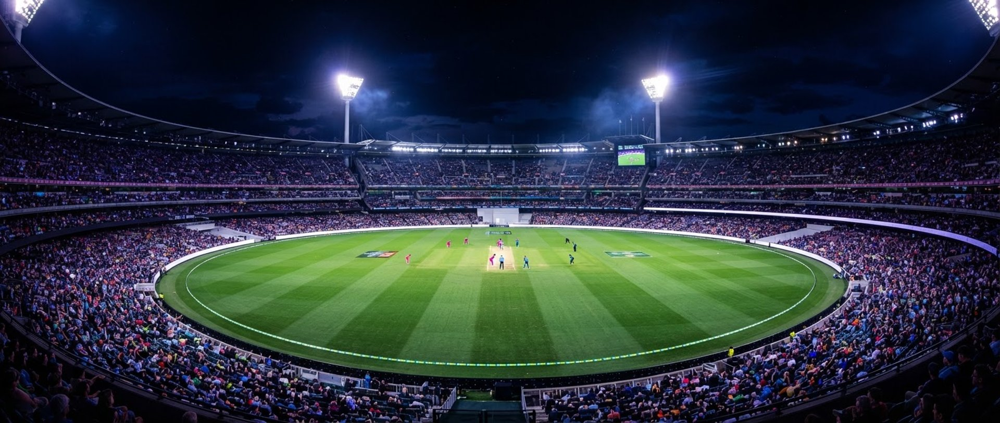

Cricket is not just a sport in India; it is an emotion followed by more than a billion passionate fans. Over the last three years, the way Indian enthusiasts engage with live matches has undergone a seismic digital transformation. Gone are the days when bettors had to rely on untrustworthy offline bookies, shady local brokers, and manual diaries with delayed settlements. Today, millions of fans across the country choose a verified Online Cricket ID to participate in live match momentum, ball-by-ball session rates, and international sports exchange markets with direct UPI payments.
However, the exponential boom in sports gaming has also led to an influx of fraudulent Telegram channels, fake screenshot vendors, and bogus betting desks that vanish the moment a player requests a withdrawal. If you want to experience the thrill of sports exchange trading while keeping your hard-earned funds 100% secure, you need an authenticated, genuine, and established onboarding provider. In this comprehensive 4,000-word blueprint, the senior analytical desk at DREAMEXCH24 walks you through everything: from selecting a Online Betting ID, mastering the mathematics of Back and Lay wagering, to obtaining your instant login in under 5 minutes with zero bot interference.
A genuine Online Cricket Bet ID grants you direct entry to global sports exchanges (such as Lotus365, SkyExchange, and TigerExch). You avoid intermediary broker commissions, receive real-time match liquidity, and enjoy instant bank settlements directly into your UPI, Google Pay, or PhonePe account within 10 to 15 minutes.
1. What Exactly is an Online Cricket ID and Why is it Necessary?
To understand why an online sports credential is required, one must first look at the unique infrastructure of international sports exchanges. Major global exchange operators—including Betfair white-labels, Lotus365, SkyExchange, and LaserBook247—do not allow direct public registration from Indian IP addresses without a verified agent network. They operate under a Master Agent & Sub-Account Hierarchy.
In this system, a verified master distributor like DREAMEXCH24 maintains high-tier liquidity deposits with the exchange platforms and creates authenticated sub-accounts (credentials containing a unique username and encrypted password) for retail punters. When you obtain an Online Cricket ID, you are not merely purchasing a random login; you are securing:
- KYC-Compliant Credential Access: Complete bypass of complex foreign verification systems while ensuring strict 18+ age verification.
- Currency Settlement in Indian Rupees (INR): Full freedom to deposit and withdraw via UPI, IMPS, NEFT, and Paytm without international conversion fees.
- 24/7 Human Mediation & Dispute Resolution: If a match is delayed, rained out, or an exchange line gets temporarily suspended, our dedicated WhatsApp team protects your balance.
- Account Recovery Safeguards: In case of password loss, accidental phone resets, or session lockouts, master providers restore your account instantly.

2. Bookmaker ID vs. Sports Exchange ID: The Critical Difference
The single most common mistake beginner bettors make is confusing a traditional bookmaker platform with a modern sports betting exchange. The mathematical disadvantage of playing against a traditional bookie is immense. Let us break down the differences:
| Evaluation Feature | Traditional Offline / Online Bookie | Verified Sports Exchange (via DreamExch24) |
|---|---|---|
| Whom You Bet Against | You bet against the House / Bookie (The house always rigs the margins). | Peer-to-Peer: You bet against thousands of other real sports fans across the globe. |
| Odds & Margin Cut | High bookmaker juice (often 7% to 15% hidden margin on match odds). | Zero house edge: Pure market-driven odds (over 98% payout efficiency). |
| Wagering Flexibility | You can ONLY "Back" (bet that something WILL happen). | You can both "Back" AND "Lay" (bet that something WILL NOT happen). |
| In-Play Cashout | Rare or accompanied by massive penalties that slash your profits. | Instant live "Cash-Out" / "Green-Book" to lock profits before match ends. |
| Withdrawal Settlement | Delayed to next week, manual bookie phone calls, high risk of default. | Direct UPI/IMPS settlement within 10 to 15 minutes guaranteed. |
By migrating to an Online Betting ID on an exchange, you effectively become a bookmaker yourself whenever you choose to "Lay" an outcome. This is the exact secret used by professional sports traders to maintain consistent profitability across the IPL, ICC World Cup, and bilateral international series.
3. The 5 Major Categories of Betting IDs Available in India
At DREAMEXCH24, we cater to every tier of sports and gaming enthusiast. Depending on your favorite sports and your wagering strategy, you can select from five specialized ID formats:
3.1 Dedicated Cricket Betting ID
Tailored specifically for die-hard cricket followers. A dedicated Cricket ID opens access to comprehensive micro-markets:
- Session Wagering (Fancy Markets): Predict runs scored in the first 6-over powerplay, 10-over midpoint, or 20-over death phase.
- Player Performance Props: Top run-scorer, highest boundary hitter, bowler match wickets, and individual player over/under lines.
- Ball-by-Ball Live In-Play: Instant wagering on every delivery with ultra-low latency match streaming.
3.2 Self-Deposit Betting ID (The Modern Indian Standard)
A Self Deposit Cricket ID is the preferred choice for 90% of our 2,00,000+ active users. Instead of sending manual screenshots to an agent and waiting hours for wallet top-ups, a self-deposit ID gives you direct, automated QR-code and UPI payment integration. You deposit funds yourself within the platform, your chips reflect in 30 seconds, and you trigger one-click withdrawal requests whenever you choose.
3.3 Multi-Sport Exchange ID
Ideal for punters who enjoy cricket alongside European football (Premier League, UEFA Champions League), tennis Grand Slams (Wimbledon, US Open), and American basketball (NBA). One unified balance covers every major sporting event globally.
3.4 Casino & Live Dealer ID
Access world-class live streaming studios featuring professional human dealers for traditional Indian card games—including Live Teen Patti, Andar Bahar, Lucky 7—as well as international favourites like Roulette, Blackjack, and Baccarat.
3.5 High-Roller / VIP Zero-Limit Master ID
Designed exclusively for high-stake traders. These accounts carry zero exposure limits, high single-match betting ceilings, private account managers, and priority 24/7 bank RTGS settlements.

4. Step-by-Step Blueprint: How to Get Your Online Cricket ID in 5 Minutes
Getting started on DREAMEXCH24 is completely frictionless. We have eliminated bureaucratic registration forms, document uploads, and slow verification queues. Here is the verified 3-step activation blueprint:
-
Step 1: Contact Our Official WhatsApp Desk:
Click any of the green WhatsApp buttons on our website or save our official verification number: +91 9549376324. Send a simple message: "Hello DreamExch24, I want to create a new Online Cricket ID." -
Step 2: Choose Your Platform & Make Your Initial Deposit:
Our human operator will present our verified platform choices (Lotus365, SkyExchange, TigerExch, or Diamond Exchange). You specify your preferred platform and choose your starting balance (starting from as low as ₹500 for testing). You transfer funds via your secure UPI app (GPay, PhonePe, Paytm) to our verified business desk. -
Step 3: Receive Login Credentials & Access Match Odds:
Within 3 to 5 minutes, our operator delivers your unique portal URL, personal username, and temporary password. Log in, change your password for enhanced privacy, and start exploring live match markets immediately!
5. Deep Dive into Top Exchange Platforms: Lotus365 vs. SkyExchange vs. TigerExch
When you request an Online Cricket Bet ID from DREAMEXCH24, you can pick from over 500+ integrated platforms. Below is an honest breakdown of the top three exchanges in India:
Lotus365: The Fan Favourite for Live Session Wagering
Lotus365 has built an unshakeable reputation across India for two reasons: blazing fast odds refresh rates and deep domestic cricket coverage. If you love session betting—such as betting whether India will score over 48.5 runs in the first 6 overs—Lotus365 offers unmatched market liquidity without unexpected betting suspensions.
SkyExchange: The Professional Trader’s Sanctuary
SkyExchange is powered by direct international exchange software. It features advanced order book depths, allowing you to see exactly how much money is sitting on each price point. Professional traders use SkyExchange to lay high-priced favorites and back underdog comebacks, locking in guaranteed profits regardless of the final match outcome.
TigerExchange: Ultra-Fast Mobile Interface & High Security
For players who bet primarily on smartphones over 4G/5G mobile data, TigerExchange is engineered with ultra-lightweight web assets. It loads instantly even in crowded stadium environments and offers clean biometric-friendly login security.
6. Session Betting, Fancy Markets & Lambhi Rates: How to Read the Numbers
If you are new to cricket betting exchanges, the terminology can seem daunting at first glance. Here is a simplified breakdown of the three core market types you will encounter:
6.1 Match Odds (Back vs. Lay)
This is the primary winner market. Next to each team, you will see two colored columns:
- Blue Column (Back): Clicking the blue box means you are betting that the team WILL WIN. For instance, if Team A is at 1.85, a ₹1,000 back bet returns ₹1,850 (₹850 pure profit).
- Pink Column (Lay): Clicking the pink box means you are betting that the team WILL LOSE. You are acting as the bookmaker against other punters.
6.2 Session Betting (Yes / No)
Session betting covers predetermined block intervals during the match (e.g., 6 Overs, 10 Overs, 15 Overs, 20 Overs). The platform quotes two numbers, for example: "49 / 51":
- If you believe the team will score 51 runs or more, you bet on the "Yes" (Over) line at 51.
- If you believe the team will be restricted to 48 runs or fewer, you bet on the "No" (Under) line at 49.
6.3 Lambhi (Total Innings Score)
"Lambhi" refers to the projected total score for the entire 20 overs (in T20s) or 50 overs (in ODIs). As wickets fall or boundaries are struck, the Lambhi line dynamically fluctuates. Savvy traders hedge between high Lambhi projections in the middle overs and low Lambhi lines during early batting collapses.

7. The 7 Golden Rules of Responsible Bankroll Management
The difference between a casual bettor who loses their bankroll and an analytical sports enthusiast who enjoys consistent long-term success comes down to discipline. As part of our Responsible Gaming Commitment, we mandate that every DREAMEXCH24 member follows these guidelines:
- The 2% to 5% Unit Rule: Never risk more than 2% to 5% of your total deposited capital on a single match or session. If your total deposit is ₹10,000, your maximum stake per event should be ₹200 to ₹500.
- Never Chase Losses: If a session goes against you due to a sudden batting collapse or run-out, step away. Never double down in anger. Tomorrow brings another match.
- Avoid Unverified Tipster Scams: 99% of Telegram channels claiming "100% fixed match reports" or "guaranteed insider news" are fraudsters. Trust your own cricket knowledge and analytical pitch reports.
- Lock Profits with 'Green Book' Cashout: When your backed team takes early wickets and odds drop from 2.20 to 1.30, use the exchange cashout feature to secure profit on both teams. Never let greed turn a winning position into a loss.
- Strict Age Verification: All gaming activities are strictly restricted to individuals aged 18 and older.
8. How to Avoid Common Cricket ID Scams on Telegram & WhatsApp
Because of the massive search demand for cricket IDs, hundreds of malicious operators create duplicate clone websites, fake WhatsApp numbers, and misleading Telegram channels. Here are the warning signs you must watch out for:
- Warning Sign 1: Unrealistic Bonus Claims (e.g., "500% Deposit Bonus"): Legitimate platforms provide realistic 10% to 20% reload incentives. Anyone offering 500% bonuses is planning to confiscate your initial deposit.
- Warning Sign 2: Withdrawal Fees or "GST Clearance Charges": A verified provider will NEVER ask you to deposit extra money to release your withdrawal. If someone asks for a "20% tax fee" before paying your winnings, they are scammers.
- Warning Sign 3: Lack of an Official Web Domain: Always verify that you are communicating with a provider linked to a live, SSL-secured domain like https://dreamexchwork.live/.
- Warning Sign 4: Automated Robot Replies: Genuine providers use trained human operators who understand sports betting terminology. Automated bot loops are a hallmark of mass-scale phishing operations.
Deepen your sports exchange knowledge with our connected analytical series:
9. Frequently Asked Questions (FAQ) About Online Cricket IDs
Q1: Is my money safe with DREAMEXCH24?
Yes, 100%. Operating continuously since 2023 with over 2,00,000 active users, DREAMEXCH24 maintains dedicated liquidity reserves. Your deposits are processed through direct Indian UPI rails, and withdrawals are executed within 10 to 15 minutes of request.
Q2: What is the minimum deposit required to get started?
You can test our platform with a starting deposit as low as ₹500. This grants you full access to live match odds, session fancy markets, and instant WhatsApp support.
Q3: How do I withdraw my winnings?
Simply message our 24/7 WhatsApp desk at +91 9549376324 with your username and your UPI ID / bank details. Our operators verify the balance and initiate an instant IMPS/UPI transfer directly to your account.
Q4: Can I place bets while a cricket match is live?
Absolutely. All accounts provided by DREAMEXCH24 offer ball-by-ball in-play markets with real-time score updates, live video feeds, and live cash-out functionality.
Q5: What happens if a cricket match is washed out due to rain?
All official international exchange rules apply. If a match is abandoned without a minimum number of overs bowled, all unmatched bets are voided and your stake is refunded 100% to your account balance immediately.
10. Conclusion: Claim Your Verified Cricket ID Today
The 2026 cricket calendar is packed with marquee tournaments—from the high-octane drama of the Indian Premier League (IPL) to bilateral Test series and ICC showdowns. Navigating this landscape requires more than just sports knowledge; it demands a trusted partner who guarantees fast execution, transparent odds, and instant payouts.
DREAMEXCH24 is proud to stand as India's premier betting ID desk. Stop taking chances with anonymous brokers. Join over 2,00,000 smart Indian sports traders who rely on our verified master credentials every single matchday.